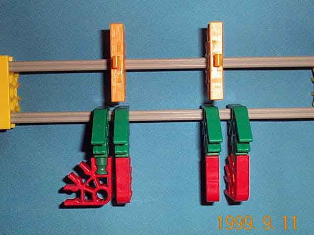

The programming hardware is mounted on the bit assembly. Each bit assembly has one set of programming hardware for each control stage.
The red (arity 3) connectors are used to program the behavior of the sense rods. When a red connector is twisted horizontally, like the one on the left in the image above, the corresponding sense rod will be blocked by it if the bit is in the appropriate state. Otherwise the sense rod is free to move and push its actuator rod off-normal.
A yellow strut is mounted on the orange (arity 5) connector if this bit is to be changed by the set or reset actuator rod of this control stage.
Attatched to the bit assembly, the thing that the yellow struts that the actuator rods engage with mount on. each bit assembly, there is one of these for each actuator rod. The thing that the sense rods engage with, composed of two red connectors and a green strut. There are two of these on each bit assembly for each sense rod.